Project 3: Image Warping and Mosaicing
Overview
This project explores homography-based image warping and the creation of image mosaics.
We implement projective transformations to warp images, rectify planar surfaces, and blend
multiple images together to create seamless panoramas. The key components include computing
homography matrices from point correspondences, implementing image warping with different
interpolation methods, and creating mosaics with smooth blending.
Part 1: Projective Transformations Between Image Pairs
We begin by demonstrating projective transformations between two images taken with a fixed center
of projection (i.e., rotating the camera). These transformations preserve straight lines but not
necessarily angles or distances, making them ideal for panorama stitching. Below are two sets of
image pairs that we will combine into seamless mosaics using homography-based warping.
Image Set 1: Perspective Views

Left perspective view (reference image)

Right perspective view (camera rotated right)
These images were captured by rotating the camera around its center of projection.
We will align and blend them to create a wider field of view panorama.
Image Set 2: Street Scene
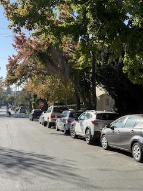
Right street view (camera rotated right)
Another set of images with overlapping content that will be combined into a mosaic.
The homography transformation will warp one image to align with the other before blending.
Part 2: Computing Homography Matrix
Point Correspondences Visualization
To compute the homography matrix, we first manually select corresponding points between image pairs.
Here are the 15 point correspondences for the perspective image pair:
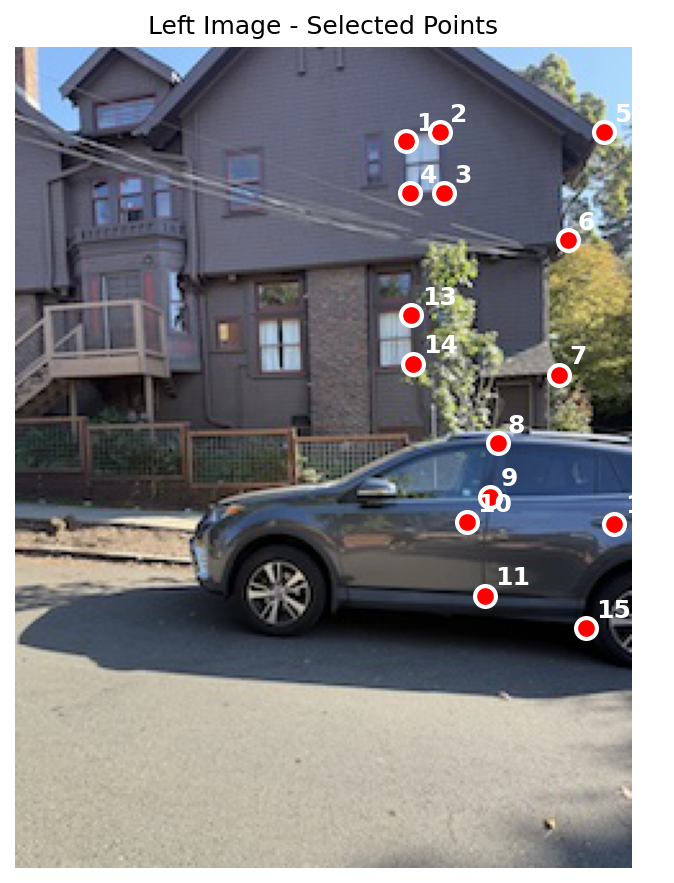
Left image with 15 labeled correspondence points
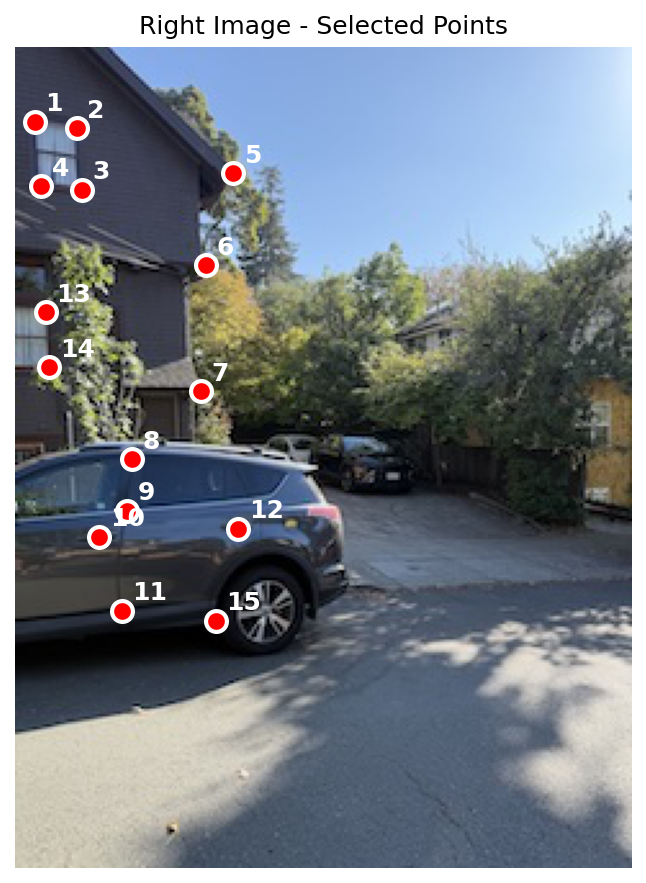
Right image with matching correspondence points
Each numbered point marks the same physical location in both images. These correspondences form
the basis for computing the homography transformation.
Implementation of computeH(im1_pts, im2_pts)
The homography matrix H defines the projective transformation between two image planes.
For a point (x, y) in the first image mapping to (x', y') in the second image, the homography is expressed as:
[x'] [h00 h01 h02] [x]
[y'] = [h10 h11 h12] · [y]
[1 ] [h20 h21 1.0] [1]
After homogeneous division, this gives us:
x' = (h00·x + h01·y + h02) / (h20·x + h21·y + 1)
y' = (h10·x + h11·y + h12) / (h20·x + h21·y + 1)
System of Equations
Rearranging to eliminate division, each point correspondence gives us two linear equations:
h00·x + h01·y + h02 - h20·x·x' - h21·y·x' = x'
h10·x + h11·y + h12 - h20·x·y' - h21·y·y' = y'
With n point correspondences, we get a system of 2n equations
with 8 unknowns (h00 through h21). This overdetermined system is solved using
least squares (np.linalg.lstsq) to find the best-fit homography matrix.
Matrix Structure: For each point pair (xi, yi) → (x'i, y'i),
we construct two rows of the matrix equation Ah = b, where h is the vector
[h00, h01, h02, h10, h11, h12, h20, h21]T.
Recovered Homography Matrix
The homography matrix computed from the 15 point correspondences between the perspective images enables
accurate transformation from one viewpoint to another. This matrix captures the rotation and perspective
effects between the two camera positions.
Part 3: Image Warping with Inverse Mapping
Warping Implementation
Two warping functions were implemented using inverse warping:
- warpImageNearestNeighbor(im, H): Uses nearest neighbor interpolation for speed
- warpImageBilinear(im, H): Uses bilinear interpolation for smoother results
Why inverse warping? Instead of mapping source pixels to destination (which can leave holes),
we iterate through each destination pixel and compute its corresponding source location using H-1.
This guarantees every output pixel gets a value.
Warping Results
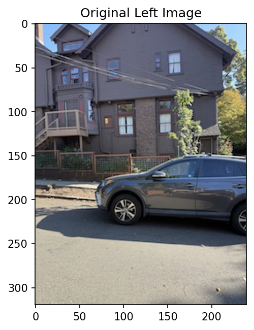
Original left image (before warping)
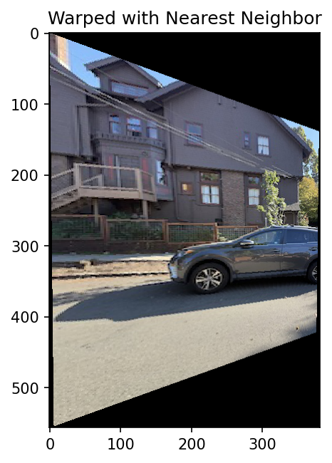
Warped with nearest neighbor interpolation
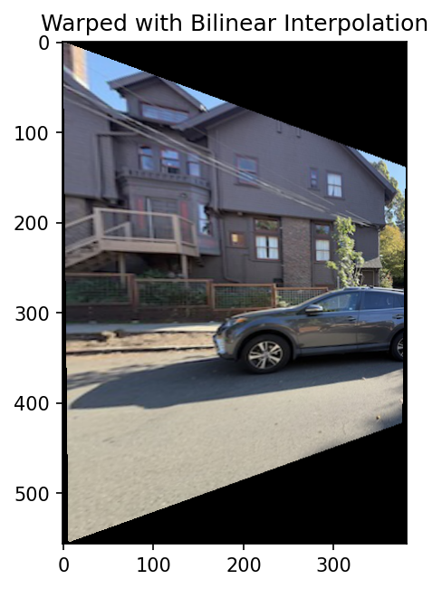
Warped with bilinear interpolation (smoother)
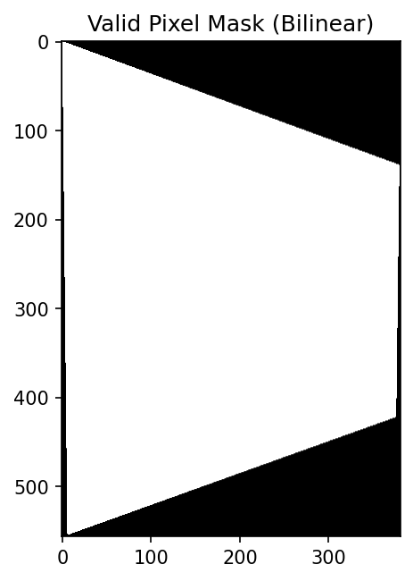
Valid pixel mask showing warped region
Comparison: Bilinear interpolation produces smoother edges and reduces aliasing artifacts
compared to nearest neighbor, though at the cost of slightly more computation time.
Part 4: Image Rectification
Rectification Process
Rectification transforms a planar surface viewed at an angle into a frontal-parallel view.
By selecting four corners of a rectangular region in the distorted image and mapping them to
a square in the output, we can "un-distort" the perspective.
Example 1: Poster Rectification
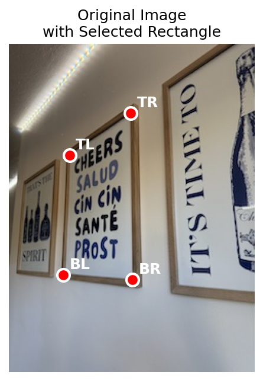
Figure 2: Original poster image with selected rectangle corners (TL, TR, BR, BL)
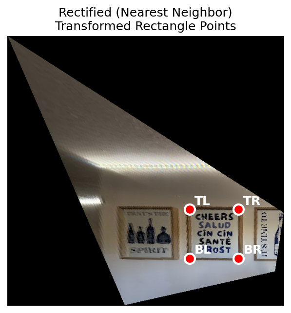
Rectified with nearest neighbor
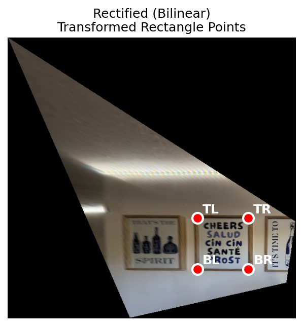
Rectified with bilinear interpolation
Cropped rectified region (nearest neighbor)
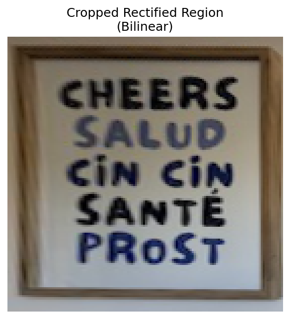
Cropped rectified region (bilinear) - final result
Example 2: Floor Tile Rectification
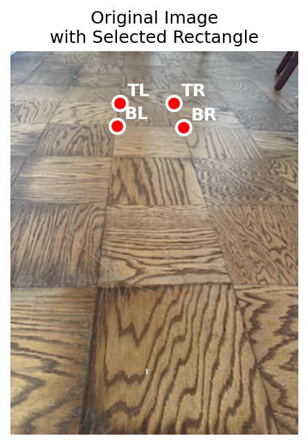
Figure 3: Floor tiles viewed at an angle with selected rectangle
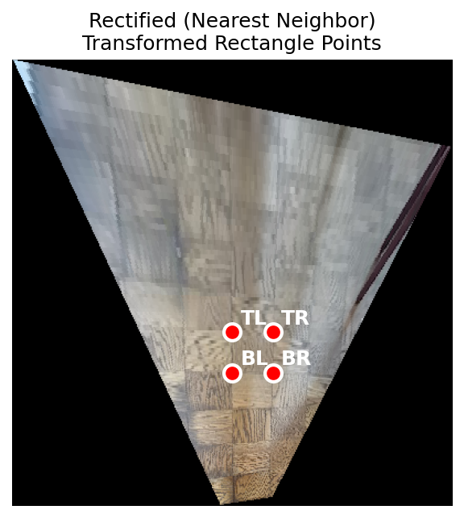
Rectified with nearest neighbor
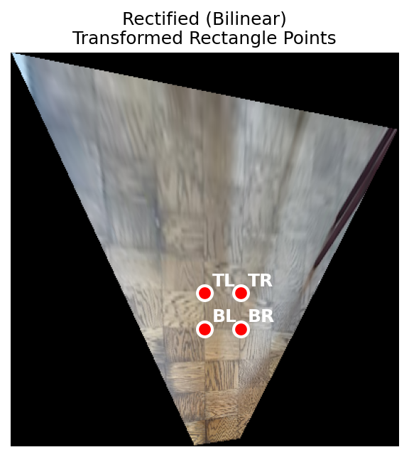
Rectified with bilinear interpolation
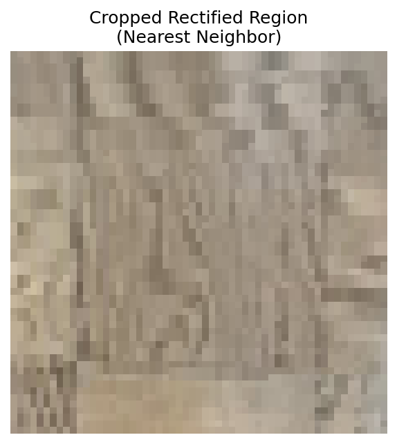
Cropped rectified region (nearest neighbor)
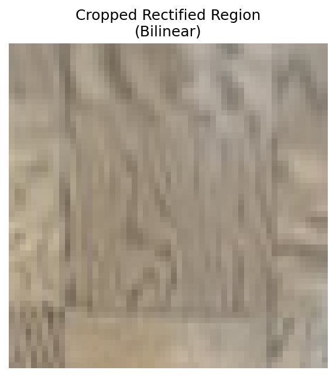
Cropped rectified region (bilinear)
Part 5: Image Mosaics
Mosaic Creation Procedure
Creating seamless mosaics involves several steps:
- Point Correspondence: Manually select matching points between images
- Homography Computation: Compute transformation matrix using computeH()
- Canvas Sizing: Calculate output dimensions to fit all warped images
- Warping: Warp each image to the reference frame using bilinear interpolation
- Blending: Use weighted alpha blending with distance-based feathering to reduce seams
Blending Strategy: We use a distance-based alpha mask where pixel weights decrease
near image boundaries. This creates a smooth transition in overlap regions, effectively hiding seams.
Each pixel's final value is the weighted average of contributions from all images.
Mosaic 1: Perspective Views
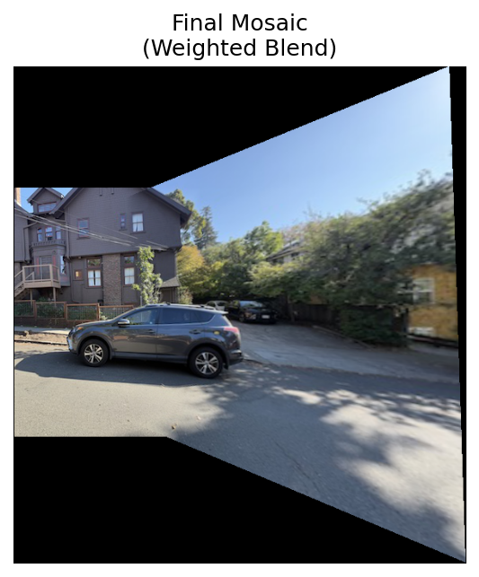
Figure 4: Mosaic combining left and right perspective views. The weighted blending
creates a seamless panorama despite the different viewpoints.
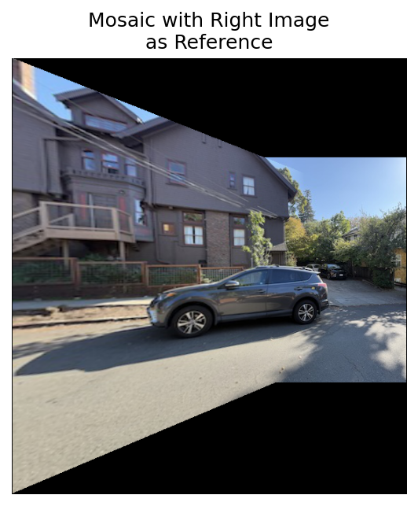
Figure 5: Alternative mosaic using right image as reference frame
Mosaic 2: Street Scene
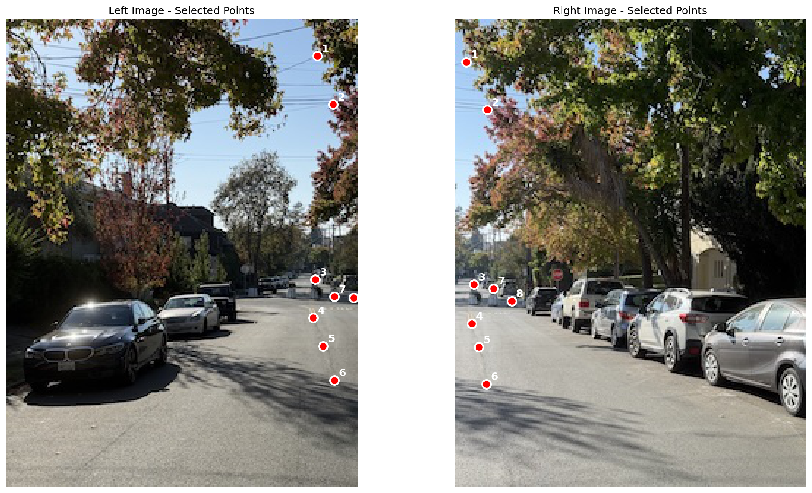
Figure 6: Point correspondences for street scene images
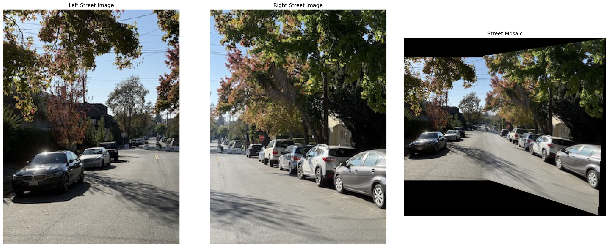
Figure 7: Street scene mosaic showing source images and final blended result.
The feathering at boundaries creates a natural-looking merge without visible seams.
Mosaic 3: Sign Panorama
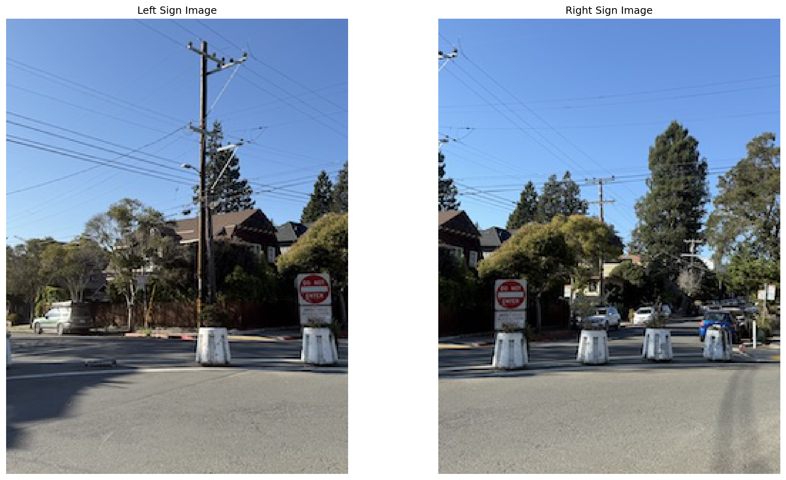
Figure 8: Source images for sign mosaic
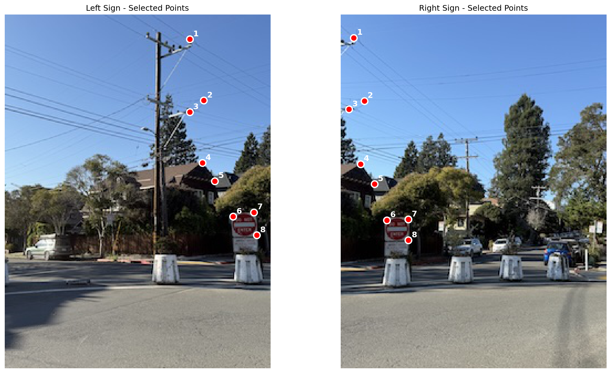
Figure 9: 8 point correspondences between sign images
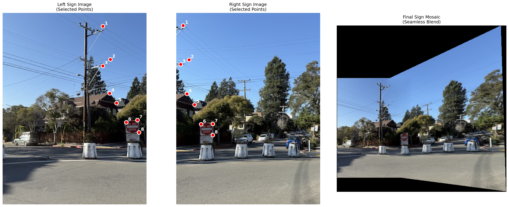
Figure 10: Final sign mosaic demonstrating successful alignment and blending.
The weighted averaging eliminates harsh boundaries in the overlap region.
Blending Implementation Details
Alpha Mask Generation
The alpha mask is created using a distance transform from image edges:
def create_alpha_mask(shape, feather_size=50):
# Compute distance to nearest edge for each pixel
dist_to_edge = min(dist_top, dist_bottom, dist_left, dist_right)
# Normalize by feather size to create smooth falloff
alpha = clip(dist_to_edge / feather_size, 0, 1)
return alpha
Weighted Averaging
Each warped image contributes to the final mosaic proportionally to its alpha value:
# Accumulate weighted pixel values
mosaic += warped_image * alpha_mask
weight_map += alpha_mask
# Normalize to get final averaged result
mosaic = mosaic / weight_map
This approach ensures smooth transitions in overlap regions while maintaining full intensity
in non-overlapping areas. The feather size of 50 pixels provides gradual blending that
effectively hides seams and brightness differences between images.